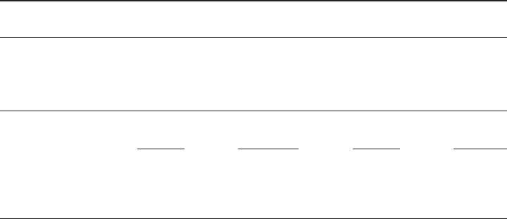
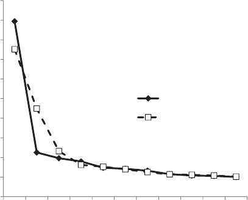

How Universal Is the Big Five? Testing the Five-Factor Model of
Personality Variation Among Forager–Farmers in the Bolivian Amazon
Michael Gurven, Christopher von Rueden,
and Maxim Massenkoff
University of California, Santa Barbara
Hillard Kaplan
University of New Mexico
Marino Lero Vie
Tsimane Health and Life History Project, San Borja, Beni, Bolivia
The five-factor model (FFM) of personality variation has been replicated across a range of human
societies, suggesting the FFM is a human universal. However, most studies of the FFM have been
restricted to literate, urban populations, which are uncharacteristic of the majority of human evolutionary
history. We present the first test of the FFM in a largely illiterate, indigenous society. Tsimane
forager–horticulturalist men and women of Bolivia (n ϭ 632) completed a translation of the 44-item Big
Five Inventory (Benet-Martínez & John, 1998), a widely used metric of the FFM. We failed to find robust
support for the FFM, based on tests of (a) internal consistency of items expected to segregate into the Big
Five factors, (b) response stability of the Big Five, (c) external validity of the Big Five with respect to
observed behavior, (d) factor structure according to exploratory and confirmatory factor analysis, and (e)
similarity with a U.S. target structure based on Procrustes rotation analysis. Replication of the FFM was
not improved in a separate sample of Tsimane adults (n ϭ 430), who evaluated their spouses on the Big
Five Inventory. Removal of reverse-scored items that may have elicited response biases produced factors
suggestive of Extraversion, Agreeableness, and Conscientiousness, but fit to the FFM remained poor.
Response styles may covary with exposure to education, but we found no better fit to the FFM among
Tsimane who speak Spanish or have attended school. We argue that Tsimane personality variation
displays 2 principal factors that may reflect socioecological characteristics common to small-scale
societies. We offer evolutionary perspectives on why the structure of personality variation may not be
invariant across human societies.
Keywords: personality, Big Five, five-factor model (FFM), indigenous, Tsimane
Supplemental materials: http://dx.doi.org/10.1037/a0030841.supp
The five-factor model (FFM) is a widely accepted construct
describing personality variation along five dimensions (i.e., the
Big Five): Extraversion, Openness, Conscientiousness, Neuroti-
cism, and Agreeableness. Many researchers have argued that the
structure of the FFM is a “biologically based human universal”
that transcends language and other cultural differences (Bouchard
& Loehlin, 2001; McCrae & Costa, 1997; Wiggins & Trapnell,
1997; Yamagata et al., 2006). Cross-cultural tests of the FFM in
over 50 societies across six continents have supported the exis-
tence and universality of the FFM (McCrae, 2002; McCrae, Ter-
racciano, & 78 Members of the Personality Profiles of Cultures
Project, 2005; Schmitt et al., 2007). A universal structure suggests
uniform covariance among traits in humans despite vastly different
culture, history, economy, social life, ideology, and every other
form of cultural and behavioral expression. The Big Five structure
is even notable in captive chimpanzees, based on ratings by zoo
employees (King & Figueredo, 1997).
Despite the increasing consensus supporting the FFM, a five-
factor structure does not robustly emerge everywhere, and some
researchers have posited more than five personality factors within
certain populations (e.g., Cheung & Leung, 1998; Lee & Ashton,
2004); however, these additional factors can often be subsumed
under one of the Big Five factors (Guanzon-Lapeña, Church,
Carlota, & Katigbak, 1998). Thus, the FFM has yet to be robustly
falsified, at least in literate, industrialized societies. If the FFM is
a human universal and represents a “solid beginning for under-
standing personality everywhere” (McCrae & Costa, 1997, p. 515),
it should replicate everywhere and under a broad range of envi-
This article was published Online First December 17, 2012.
Michael Gurven, Christopher von Rueden, and Maxim Massenkoff,
Department of Anthropology, University of California, Santa Barbara;
Hillard Kaplan, Department of Anthropology, University of New Mexico;
Marino Lero Vie, Tsimane Health and Life History Project, San Borja,
Beni, Bolivia.
Funding was provided by the National Institutes of Health and the
National Institute on Aging (Grants 2R01AG024119 and 2R56AG024119-
06). We are grateful to the Tsimane for their hospitality and collaboration
over the years. Gary Lewis provided helpful comments on a draft of this
article. We also thank Aaron Lukaszewski for sharing ideas and comment-
ing on a draft of the article.
Correspondence concerning this article should be addressed to Michael
Gurven, Department of Anthropology, University of California, Santa
Barbara, CA 93106. E-mail: gurven@anth.ucsb.edu
Journal of Personality and Social Psychology © 2012 American Psychological Association
2013, Vol. 104, No. 2, 354–370 0022-3514/13/$12.00 DOI: 10.1037/a0030841
354
ronments and populations. To date, the FFM has yet to be tested in
an indigenous, preliterate society. The vast majority of samples
from cross-cultural studies are often urban students, glibly referred
to as western, educated, industrialized, rich, democratic (WEIRD)
populations (Henrich, Heine, & Norenzayan, 2010). Despite the
wide range of cultures and languages where the FFM has been
tested, WEIRD populations might show a similar personality struc-
ture if trait covariance is an artifact of living in large urban, literate
populations. There are important reasons for assessing the validity
of the FFM in an indigenous, preliterate society. First, human
psychological adaptations likely evolved in the ancestral context of
a hunting and gathering lifestyle with a social life characterized by
frequent face-to-face interactions, largely with kin. Although pure
hunter–gatherers are exceedingly rare, many groups maintain tra-
ditional lifestyles and share many social and economic character-
istics with hunter–gatherers. Testing the FFM in these populations
would be particularly valuable for assessing the universality of the
FFM. In the past, empirical patterns observed in WEIRD popula-
tions and assumed to be human universals have been contradicted
(or at least qualified) by observations in small-scale societies
(Henrich et al., 2010). To date, no test of the FFM has ever been
conducted among a small-scale population of foragers, farmers, or
herders.
Second, the existence of the FFM is an inductively derived
success of personality psychology, but to date, no extensive theory
exists that can generate the FFM from first principles. There are no
a priori reasons for expecting a particular number of trait dimen-
sions or within-trait and intertrait correlations, although post hoc
explanations of empirical regularities have been made (e.g., Denis-
sen & Penke, 2008; Nettle, 2010). Thus, when the FFM receives
less consistent support, as in several non-Western countries (e.g.,
Piedmont, Bain, McCrae, & Costa, 2002; Schmitt et al., 2007;
Triandis, 1997), a common response from FFM advocates is to
argue that methodological issues prevent FFM replication. How-
ever, without a comprehensive theory of personality formation, it
is unclear whether different socioecological environments should
generate veritable differences in personality structure in the first
place. Are the tenuous results in non-Western societies genuine or
artifactual?
We provide the first test of personality structure among an
indigenous, largely illiterate population: the Tsimane forager–
horticulturalists of lowland Bolivia. We use a Spanish translation
of the Big Five Inventory, a widely used metric of the FFM first
developed by Benet-Martínez and John (1998). Our null prediction
is that the Big Five should replicate in the Tsimane population. If
certain features, such as literacy and education, are important for
generating the Big Five pattern, we might find that the Big Five
does not replicate among Tsimane. However, we should expect to
find the Big Five structure to replicate among more educated and
literate Tsimane. We test the validity of the five-factor model by
assessing (a) internal reliability of each factor, (b) external
validity of the factors, (c) 1-year test–retest factor correlations,
(d) whether the FFM is generated from exploratory factor
analysis, (e) whether confirmatory factor analysis supports the
FFM, and (f) whether Procrustes rotation to a U.S-based sample
indicates similar FFM structure. We determine whether the FFM
is better replicated with (g) stratification of the sample into sub-
groups that might differ in familiarity with testing procedures,
performance, and self-reflection (age, sex, schooling, and Spanish
fluency), (h) selective removal of least internally consistent items,
(i) selective removal of items that evidence socially desirable
responding (i.e., highly positive or negative response scores), (j)
correction for acquiescence bias (i.e., a tendency of subjects to
affirm personality descriptors read to them), or (k) evaluation of a
separate sample of subjects asked to evaluate the personality of
their spouses. Peer-reported personality may improve internal re-
liability of the Big Five (McCrae et al., 2005).
Despite our rigorous set of tests and analyses, we do not find
strong, consistent support for the Big Five. We instead find evi-
dence of factor structure consistent with a “Big Two” oriented
around prosociality and industriousness. Our findings put the uni-
versality of the FFM into question but, more important, heighten
the need to develop models of how low-order traits should be
coordinated to assemble into higher order factors, given cultural
and socioecological variability.
The paper is organized into five sections. Section 1 provides an
overview of cross-cultural studies of the FFM in order to contex-
tualize the value of the current study. Section 2 briefly describes
the Tsimane population. Section 3 discusses our methods, and
Section 4 presents our results. Section 5 interprets our results and
discusses personality and the FFM in small-scale indigenous
societies.
Cross-Cultural Studies of the Big Five
The FFM has been assessed with both etic and emic approaches.
In etic studies, a previously identified personality structure is
applied in a different culture or context; in emic approaches, a
personality structure is indigenously derived with a sampling of
the target culture’s personality descriptors.
The FFM was derived in English using a lexical (emic) ap-
proach, which assumes that all relevant personality descriptors are
found in a group’s vocabulary (Digman, 1990; Goldberg, 1990;
John, 1990). Although early research in personality structure
yielded many competing constructs to describe personality varia-
tion, the FFM has emerged as the most widely accepted model
(Peabody & De Raad, 2002). The FFM has since been tested in
many countries and in numerous languages with the Revised NEO
Personality Inventory (NEO-PI–R) (Costa & McCrae, 1992) and
the Big Five Inventory (BFI) (Benet-Martínez & John, 1998)
protocols. Even a nonverbal protocol has confirmed the general-
izability of the FFM in cross-cultural context (Paunonen, Ashton,
& Jackson, 2001).
Across cultures, etic studies have generally replicated the FFM
(NEO-PI–R: McCrae, 2002; BFI: Schmitt et al., 2007), and factor
scales show high internal reliability; however, Extraversion and
Agreeableness are sometimes sensitive to “cultural effects” and are
not always clearly differentiated (Ortiz et al., 2007; Rolland,
2002). As a result, McCrae, Costa, Del Pilar, Rolland, and Parker
(1998) have suggested that a universal FFM consists of the first
three factors and an “interpersonal circumplex”—which subsumes
elements of Extraversion and Agreeableness factors based on
Procrustes analysis (Rolland, 2002).
Among emic studies, an Openness factor is not consistently
extracted (De Raad, 1994; Di Blas & Forzi, 1998; Szirmák & De
Raad, 1994). Furthermore, several emic studies have consistently
yielded more than five factors (Almagor, Tellegen, & Waller,
1995; Benet-Martínez & Waller, 1997). In China, Cheung and
355
HOW UNIVERSAL IS THE BIG FIVE?
Leung (1998) have identified a “tradition” factor independent of
the Big Five. However, results from emic studies do not always
match the results from etic studies of the same population. For
example, in Italy, studies using translated inventories have identi-
fied a Neuroticism factor (Caprara, Barbaranelli, Borgogni, &
Perugini, 1993; Perugini & Leone, 1996), but emic studies have
not (Caprara & Perugini, 1994; Di Blas & Forzi, 1998). Openness
and Neuroticism are more robustly established in etic studies
than in emic studies, which has led to a growing consensus that
lexical approaches underlying emic studies are not comprehen-
sive ( Church & Lonner, 1998; Rolland, 2002). As McCrae and
Costa (1997) concluded, “It is simply not the case that all
personality traits are encoded as adjectives . . . lexical studies
confound differences in personality structure with differences
in personality language” (p. 510).
In cross-cultural studies, reliability of the FFM has been highest
in developed countries. In Allik and McCrae (2004) and Schmitt et
al. (2007), sample populations were predominantly college stu-
dents and were often bilingual. In developing countries, the FFM
has met with less success; whether this is due to methodological
problems or to actual differences in personality structure remains
to be determined. Methodological differences may arise due to
translations not being equivalent, lack of item relevance in the
local culture, differences in subject response styles, unfamiliarity
with the test format, and unrepresentative samples (Paunonen &
Ashton, 1998).
In Schmitt et al. (2007), internal consistency of factor items
based on Cronbach’s alpha was sufficiently high in South Amer-
ican samples, with each country averaging above the standard
benchmark of 0.70. However, several African countries fared
worse: Average Cronbach’s alphas for Morocco, Tanzania, Ethi-
opia, and Congo were 0.62, 0.59, 0.48, and 0.48, respectively.
Despite low internal consistency, the African and South American
samples showed high levels of congruence with the American
normative factor structure under Procrustes rotation (Schmitt et al.,
2007). However, of the seven countries in Africa reported in
Schmitt et al. (2007), six were administered the BFI in English,
and four had samples restricted to college students. Similarly, the
five South American countries in the study (including Bolivia)
contained only college students.
Reliability is sometimes improved in studies that rely on third-
party observer reports rather than self-reports. In a large cross-
cultural study of this type in 50 different societies, McCrae et al.
(2005) asked college students to give observer ratings on the
NEO-PI–R for persons of all ages they knew well. Roughly 5% of
the Cronbach alphas were lower than 0.70, with this 5% concen-
trated primarily in the samples from developing countries. Al-
though relying on observer ratings helped improve internal con-
sistency, it did not eliminate potential problems of evaluative bias
common to self-report data in developing societies. For example,
Openness did not cleanly emerge in Nigeria. McCrae et al. (2005)
concluded that “it is possible that there is a minority of cultures in
which the [FFM] structure is not found” (p. 552).
To our knowledge, only two studies have focused explicitly on
ethnic populations in the developing world. Piedmont et al. (2002)
tested the NEO-PI–R among the Shona, a sub-Saharan society in
Zimbabwe. Within this mixed rural and suburban sample (predom-
inantly college students bilingual in English and their native
Shona), the average internal consistency for the five factors was
0.77, higher than for the African samples in Schmitt et al. (2007).
However, Openness produced a low reliability of 0.64, and only
five of the 30 NEO-PI–R facets produced reliabilities above 0.60.
Factor congruence with the American normative structure was
high at 0.89, but only 15 facets produced congruence coefficients
higher than 0.90. These results were obtained with the Shona
language version of the NEO-PI–R; the English version of the test
showed slightly higher reliability and congruence. Schmitt et al.
identified translation problems as the main factor contributing to
the less than ideal fit to the FFM: The Shona language lacks words
equivalent to some of the English terms in the NEO-PI–R.
Alvergne, Jokela, and Lummaa (2010) administered the English
Mini-Markers Big Five Inventory (Thompson, 2008) in four agri-
cultural Senegalese communities, among individuals with diverse
ages and with low levels of education. The subsistence focus on
cash cropping and the low fertility rate (5 births per woman) are
not characteristic of more traditional human societies lacking
agriculture and practicing natural fertility. The sample size was
quite small (n ϭ 65 families), and the Mini-Markers Inventory
used has not been validated among non-English speakers. After
removal of hard-to-translate items and further shortening of the
survey for brevity, the administered version of the BFI included
only 27 items. Alvergne et al. retained about half of those items for
analysis, with most factors based on only two or three adjectives.
Reliability among these factors was still low, averaging 0.64.
Study Population
The Tsimane are forager–horticulturalists of central lowland
Bolivia, located along the Maniqui, Quiquibey, Apere, and Matos
Rivers and in adjacent forests of the Beni Department. Although
families may spend weeks or months on hunting or fishing trips or
cultivate fields some distance from their primary house in settled
villages, the Tsimane are semisedentary and live in communities
ranging from 30 to 500 individuals. Their population is estimated
at 10,000 and is dispersed among over 90 villages. They cultivate
plantains, rice, corn, and sweet manioc in small swiddens and
regularly fish and hunt for meat. These foods together provide over
90% of the calories in the diet, with the remainder coming mainly
from trade with itinerant merchants. Polygyny occurs at low fre-
quencies (ϳ5%) and is concentrated in more remote communities
(Gurven, Winking, Kaplan, von Rueden, & McAllister, 2009).
Exclusive priority of access for individuals or small groups to
certain rights and resources is minimal, but land close to village
centers is de facto privately owned. More extensive ethnographic
background can be found in Chicchón (1992), Huánca (1999), and
Schniter (2009).
Since the mid-20th century, the Tsimane have come into greater
contact with modernizing influences. In Tsimane villages, espe-
cially those located near the town of San Borja (population
ϳ25,000), incipient cattle ownership, wage labor with loggers and
farmers, and produce sales to local markets are on the rise. Many
Tsimane now have minimal access to health care through the
services of a health post, a hospital in San Borja, and the Tsimane
Health and Life History Project, but mortality rates remain high,
particularly among infants. Approximately 20% of offspring never
reach age 5 (Gurven, Kaplan, & Zelada Supa, 2007). The Tsimane
rarely use modern contraceptives; the total fertility rate is very
high (ϳ9 births per woman), and so the population growth rate is
356
GURVEN ET AL.
high (3.6% per year). Many Tsimane villages now have access to
public schooling for their children taught largely by bilingual
Tsimane teachers trained by local missionaries. Several secondary
schools now exist in larger villages, and young Tsimane adults are
starting to become high school graduates. However, the overall
adult literacy rate remains low, at 25%. Fluency in the native
Tsimane language is universal, and only 40% of adults are mod-
erately fluent in Spanish. The Tsimane language is an isolate,
together with Mosetene, and it is unrelated to the dominant indig-
enous languages of Bolivia.
Tsimane live in extended family clusters, within which occur the
majority of food and labor sharing. Although social and coopera-
tive in daily interactions with village co-residents, Tsimane fam-
ilies value their autonomy. Groups of family clusters compose
villages, which were given formal geographic boundaries only in
the late 20th century and lack a strong sense of identity (Gurven,
Zanolini, & Schniter, 2008). Village residents elect chiefs to or-
ganize community meetings and to represent their interests to
outside political bodies, but chiefs lack any substantial authority,
tend to have short tenure, and often are unable to effectively
organize people for collective action (Gurven & Winking, 2008;
von Rueden, Gurven, & Kaplan, 2008). In the event of interper-
sonal conflict, Tsimane often “vote with their feet” by moving to
other villages.
Tsimane often describe each other in valent terms, with judg-
ments of good (jäm’si) and bad (jam jäm’si or a’chis) applying to
numerous domains. Maintaining friendly relations (jäm’yity mun-
tyi), being easygoing (chuchuijtyi), and avoiding direct confronta-
tion and expression of anger (chij facoij) are viewed as proper
ways of behaving and are ingrained in Tsimane culture. In their
descriptions of others, Tsimane recognize the persistence of par-
ticular traits in individuals over time. Someone who speaks freely
(chij peyaquity) but not too much or in a gossiping way (chij
peyacsity) is a valued social partner, and jokesters are also recog-
nized and viewed positively (chij shevinyity). Happy, cheerful
individuals (majoijbäyis) are contrasted with serious, quiet indi-
viduals (futy’dyety) or those who are easily annoyed (achiyity).
Other negative traits commonly described refer to those who react
rapidly, usually in a bad way (che’chei’si), those who brag
(va’bunyis), and those who are lazy (shoyijyi’tyi or jamyedyedye-
tyi). Laziness is often contrasted with demonstration of strong
work effort (setyi or chij carijtaqui) and generosity in helping
others (chij notacsity).
Method
We administered a personality questionnaire based on the Big
Five Inventory (BFI), a widely used 44-item metric of the five-
factor model. The Spanish version of the BFI, previously validated
by Benet-Martínez and John (1998), was translated into the Tsi-
mane language by two bilingual Tsimane research assistants (Ma-
rino Lero Vie [MLV] and Feliciano Cayuba Claros) and Michael
Gurven (MG). As a test of the accuracy of the translation, the
Tsimane questionnaire was then back-translated into Spanish by
a different translator, and discussions among the three bilingual
Tsimane and MG ensued until a workable translation was found
that captured the essence of each item. Due to limitations of
Tsimane vocabulary, several items required a definitional
phrase in the local idiom rather than relying on a single word to
capture the right meaning. In these cases, either an exact word did
not exist or, taken out of context, the word could be misconstrued.
For example, Item 31 (“is clever and analytical”) was translated as
Mi buty chij cave=jedye judyeya jäm= yu= ban mi (literally, “Knows
how to ‘see’ things and can make things turn good”), because the
Tsimane word for “smart” reflects the state of being knowledge-
able. Item 32 (“radiates enthusiasm”) was translated as Mi buty fer
ma’je’ ji=cave= jun’si chuc mi ma=je (literally, “You really show to
others whatever it is you want” [to show]) because there are no
Tsimane words for “radiate” or “enthusiasm.” Due to the lack of
any word for “art” in Tsimane, Item 44 (“few artistic interests”)
was translated more descriptively as “someone who does not like
to play music, sing, tell stories, or draw.” Those are the main forms
of artistic expression in Tsimane society. When necessary, trans-
lating the whole concept rather than the literal words enabled us to
circumvent translation problems reported by other cross-cultural
studies of the FFM (e.g., Piedmont et al., 2002). Only one item
from the original BFI was removed (Item 30: “has an active
imagination”) due to the inability to find a suitable expression to
explain the concept in a manner that was consistently understood
by Tsimane subjects. This item, alone among the BFI items, was
found to be understood differently by bilinguals when presented in
Spanish versus English, suggesting it should be revised or omitted
from the BFI in the context of cross-cultural studies (Ramírez-
Esparza, Gosling, Benet-Martínez, Potter, & Pennebaker, 2006).
Thus, the final Tsimane BFI instrument includes 43 items.
The Tsimane BFI was administered to 632 adults from 28
villages during the period January 2009 to December 2010. The
sample was 48% female, the average age was 47 years (range ϭ
20–88 years, SD ϭ 14.4), and the average years of formal edu-
cation was 1.2 years (range ϭ 0–12 years, SD ϭ 2.2). The age,
years of formal education, and Spanish proficiency of all subjects
were ascertained from demographic interviews (see Gurven et al.,
2007). The Tsimane BFI was conducted verbally in a private
location by a bilingual Tsimane research assistant (MLV) trained
in the administration of anthropological and psychological inter-
views. As in the English version of the BFI, responses were given
on a translated scale where 1 corresponds to strongly disagree and
5 corresponds to strongly agree. Subjects were first given a quick
tutorial and comprehension test on the use of the scale, after which
all subjects showed clear evidence of understanding the scale and
the task at hand. The scale, depicted on a piece of cardboard placed
in front of the subject, included drawings to help facilitate under-
standing. Five drawings of a person accompanied the five numbers
on the scale; the drawings revealed more and more of the person
as the scale ascended: a drawing of just a person’s legs accompa-
nied 1 and a drawing of the whole body accompanied 5. Although
many respondents were previously unfamiliar with Likert-type
scales, few were new to formal interviews because of their exten-
sive participation in the Tsimane Health and Life History project
we have maintained continuously since 2002 (see http://www.unm.
edu/~tsimane/). Indeed, our decade-long presence in the area has
helped to establish trusting, collaborative relationships among
study subjects.
After the interview, MLV used the same 5-point scale to rate
respondents on four variables based on his observations during the
fifteen or so minutes of the BFI interview together with an addi-
tional 30 minutes spent conducting a separate interview (on eco-
nomic production and sharing): the extent to which the subject was
357
HOW UNIVERSAL IS THE BIG FIVE?
talkative, shy, smiling and/or joking, and easily distracted. These
were added to help gauge external validity of the FFM instrument.
MLV performed multiple test runs in order to ensure consistency
in his observations.
None of our interviews produced missing items. Thirty-four
subjects (53% female) were interviewed twice, each interview
roughly a year apart (average 14.2 Ϯ 2.6 months), providing a test
of response stability. The average age of this subsample is 52
years.
In addition to conducting our first-person interviews, we asked
430 Tsimane adults to rate their spouses on the Tsimane BFI.
These interviews were conducted during the period from March
2011 to February 2012. The sample of spouses who were rated was
50% female, and the average age was 52 years (range ϭ 16–89
years, SD ϭ 11.6). The protocol did not differ from the self-report
protocol except that with each item of the BFI verbalized to the
raters, subjects were reminded to evaluate their spouse. The self-
report and spouse-report samples overlap for 66 individuals (46%
female; average age ϭ 52 years). Although the spouse-report
sample by definition excludes unmarried individuals, we do not
expect significant differences across the samples due to marital
status: Only 26 of the 632 adults in the self-report sample were
single at the time of data collection.
Results
Internal Reliability
We first test the reliability of each of the Big Five factors. The
Cronbach’s alpha measures of internal reliability, factor means,
ranges, and standard deviations are given in Table 1. All items
phrased in reverse (e.g., the Extraversion item “is shy”) were
reverse scored prior to calculation of these statistics. Although the
distributions of subjects’ scores on the Big Five factors do not
conform to a normal distribution according to the Shapiro–Wilk
test, the distributions do not exceed skew or kurtosis values of Ϯ1.
Extraversion, Agreeableness, Conscientiousness, and Openness
show moderate internal reliability (Cronbach’s ␣ϭ0.63, 0.58,
0.69, and 0.54, respectively), and Neuroticism shows low reliabil-
ity (0.31).
Internal Reliability by Age, Sex, Education, and
Spanish Fluency
We next examine whether internal reliability differs by age, sex,
formal education, and Spanish fluency. If schooled adults are more
familiar with testing and if Spanish speakers are more familiar
with other ideas and cultures in a way that may promote self-
reflection, then their item responses within factors might be more
consistent than responses from unschooled or monolingual Tsi-
mane speakers. Subjects were divided into several subgroups:
those older and younger than 44 years (the median age), men and
women, those with and without any formal schooling, and those
who do or do not speak Spanish. Although internal reliability of
several of the Big Five improves within particular subgroups, no
subgroup shows consistent improvement across all of the Big Five
(see Table 2). Averaged across the Big Five, differences in reli-
ability between complementary subgroups (e.g., old vs. young)
were close to zero. Extraversion and particularly Openness show
higher internal reliability among men, the young, the educated, and
those who speak Spanish. Agreeableness and Conscientiousness
produce the opposite result.
Removing Potentially Problematic Items and
Correcting for Acquiescence Bias
We consider the possibility that despite our efforts at repeated
translation and back-translation, certain items may still have been
interpreted differently by subjects from their intended meaning. If
certain items are driving the low reliability scores, we might expect
them to load weakly on each factor. In an attempt to address this
potential problem, we first drop the least reliable item (i.e., the
item whose removal would most increase factor internal reliabil-
ity) from each of the Big Five and recalculate Cronbach’s alpha.
Table 1
Mean Response Score, Score Ranges and Standard Deviations, and Internal Reliability
(Cronbach’s Alpha) for the Five Factors
Factor (no. items)
Self-report sample (n ϭ 632)
M Range SD ␣␣
a
␣
b
␣
c
␣
d
Extraversion (8) 25.30 15–37 4.83 0.63 0.77 0.73 0.61 0.63
Agreeableness (9) 34.07 21–44 4.36 0.58 0.65 0.72 0.51 0.62
Conscientiousness (9) 30.31 15–42 5.01 0.69 0.71 0.71 0.63 0.70
Neuroticism (8) 24.40 14–36 3.87 0.31 0.37 0.40 0.40 0.36
Openness (9) 30.14 19–42 4.62 0.54 0.59 0.55 0.51 0.38
Spouse-report sample (n ϭ 430)
Extraversion (8) 27.67 13–39 4.31 0.47 0.59 0.51 0.44 0.46
Agreeableness (9) 34.73 22–45 3.97 0.39 0.50 0.58 0.31 0.44
Conscientiousness (9) 32.70 14–42 4.15 0.44 0.54 0.71 0.31 0.47
Neuroticism (8) 23.76 14–32 3.51 0.07 0.26 0.41 0.19 0.14
Openness (9) 31.89 16–42 4.25 0.43 0.60 0.56 0.39 0.26
a
After removal of least internally consistent item (item whose removal most increases factor
reliability).
b
After removal of reverse-scored items.
c
After removal of items with high (Ͼ4) or low (Ͻ2)
mean responses.
d
After correction for acquiescence bias.
358
GURVEN ET AL.

Extraversion and Conscientiousness now surpass the standard
benchmark of 0.70, and internal reliability for Agreeableness and
Openness improve but remain suboptimal. The reliability for Neu-
roticism remains quite low even after removal of the least reliable
item (see Table 1). The least internally reliable items include, for
Agreeableness, Item 22 (“is sometimes ill-mannered with others”);
for Conscientiousness, Item 42 (“gets distracted easily”); for Ex-
traversion, Item 6 (“is reserved”); for Neuroticism, Item 35 (“re-
mains calm in difficult situations”); and for Openness, Item 12
(“likes routine”). Further removal of the weakest remaining item
from each factor did not bring Agreeableness, Neuroticism, or
Openness to acceptable levels of reliability.
The first and second least reliable items within each of the Big
Five are all items that are reverse scored. This suggests these items
may have been differentially susceptible to socially desirable re-
sponding. Alternatively, a low covariation among true- and
reverse-scored items within each of the Big Five could arise
through acquiescence bias, which is any tendency of individuals to
respond affirmatively to questions posed them. We remove all
reverse-scored items and recalculate Cronbach’s alpha for each of
the Big Five. This eliminates 16 of the 43 items. Agreeableness, in
addition to Extraversion and Conscientiousness, now produces
acceptable internal reliability. The reliabilities for Neuroticism and
Openness remain low (see Table 1).
We next assess internal reliability by removing other items that
may have prompted socially desirable responding. These are items
with high or low mean response values. Given the self-report
nature of the BFI instrument, especially to a third-party (albeit
neutral) Tsimane assistant, it may be that an individual less famil-
iar with interviews (a) is uncomfortable conveying self-ratings for
traits deemed highly negative or (b) gives biased responses for
highly positive traits when speaking to another Tsimane (or even
to him- or herself). We therefore remove items with mean response
scores less than two or greater than four. This eliminates nine of
the 43 items: two with strong disagreement (Item 2: “tends to be
critical”; Item 13: “starts disputes with others”) and seven with
strong agreement (Item 3: “is meticulous about work”; Item 10:
“has diverse interests”; Item 11: “energetic”; Item 23: “is inven-
tive”; Item 26: “worries about things”; Item 35: “maintains calm in
difficult situations”; Item 37: “is considerate and friendly with
everyone”). This exercise modestly increases internal reliability
for Neuroticism yet decreases reliability for Agreeableness, Open-
ness, Extraversion, and Conscientiousness (see Table 1). Thus,
with this manipulation, none of the Big Five surpass a Cronbach’s
alpha score of 0.70. It is noteworthy to mention that for at least five
of these eliminated items, means distant from 3 are unsurprising
and mesh with our expectations based on 12 years of experience
living with Tsimane.
Finally, we attempt to correct for acquiescence bias not by
removing problematic items but according to the method described
in Hofstee, Ten Berge, and Hendriks (1998). First, we average the
response scores for each subject for 15 BFI item pairs with
opposite implications for personality (Soto, John, Gosling, & Pot-
ter, 2008). Second, we generate an acquiescence index by calcu-
lating the difference between each average and the scale midpoint.
Third, we subtract each subject’s acquiescence score, whether
positive or negative, from his or her responses. The average
acquiescence score across the 632 subjects is 0.23 (SD ϭ 0.29),
which is 5.84% of the scale range. Acquiescence in Western
subjects is of a similar magnitude: Rammstedt, Goldberg, and
Borg (2010) reported an average acquiescence score on the BFI of
0.11 (SD ϭ 0.28) for German adults with a high degree of formal
education and an average score of 0.25 (SD ϭ 0.38) for those with
little or no formal education. Among the Tsimane, correction for
acquiescence bias generates acceptable internal reliability only
for Conscientiousness. Internal reliability decreases significantly
for Openness (see Table 1).
External Validity
The Big Five are correlated in expected directions with
observed characteristics of subjects during interviews (see Ta-
ble 3). Extraversion, Agreeableness, Conscientiousness, and
Openness are positively correlated with smiling and negatively
correlated with shyness. They also positively correlate with
talkativeness and negatively correlate with distractedness, but
the effect sizes are smaller. Neuroticism is positively correlated
with the respondent’s shyness and negatively correlated with
smiling.
Table 2
Internal Reliability Based on Cronbach’s Alpha for Subgroups of Self-Report Sample
Factor
Men
(n ϭ 326)
Women
(n ϭ 306)
Older (Ͼ44)
(n ϭ 310)
Young (Յ44)
(n ϭ 321)
Extraversion 0.61 0.53 0.62 0.65
Agreeableness 0.57 0.59 0.64 0.53
Conscientiousness 0.62 0.61 0.73 0.63
Neuroticism 0.28 0.27 0.35 0.28
Openness 0.50 0.37 0.49 0.59
Educated
(n ϭ 227)
Not educated
(n ϭ 365)
Spanish
(n ϭ 315)
No Spanish
(n ϭ 280)
Extraversion 0.65 0.59 0.61 0.54
Agreeableness 0.51 0.59 0.52 0.56
Conscientiousness 0.60 0.69 0.58 0.67
Neuroticism 0.31 0.30 0.30 0.30
Openness 0.59 0.46 0.51 0.44
359
HOW UNIVERSAL IS THE BIG FIVE?
Response Stability
Test and retest responses were collected about a year apart from
34 subjects. The Tsimane average retest correlation (Spearman’s
rho) is 0.431 and ranges from 0.274 (p ϭ .116, two-tailed) for
Agreeableness, 0.370 (p ϭ .031) for Neuroticism, 0.420 (p ϭ .013)
for Openness, 0.466 (p ϭ .005) for Conscientiousness, to 0.627
(p Ͻ .001) for Extraversion.
Correlations Between Factors
Spearman correlations among the Big Five are presented in
Table 4. All correlations are significant at the 1% level. Neurotic
individuals are less likely to be extraverted, agreeable, open, and
conscientious. All other associations among other factors are pos-
itive. Extraversion is especially highly correlated with each of the
other Big Five.
Exploratory Factor Analysis
We perform an exploratory factor analysis (EFA) using varimax
rotation and principal-components extraction to test whether our
43 BFI items inductively organize into the familiar Big Five. The
unrestricted EFA results in 11 components with eigenvalues
greater than one, and the eigenvalues decrease sharply after the
first component (see Figure 1).
Before factor rotation, the first factor explains 20.8% of the
variance in the data, and the second factor explains only 5.2% of
the variance. After factor rotation, this disparity is attenuated: The
first factor explains 13.2% of the variance, the second explains
9.8%, and the third through fifth factors explain approximately
4.0% of the variance each. The rotated component matrix shows
considerable cross-loading of items from the BFI, with no clear
replication of any Big Five factor (see Table S1 of the supplemen-
tal materials). Only the first and second factors are well defined
based on the intercorrelations of items that load the highest on each
factor. Cronbach’s alpha is 0.88 for the first factor, 0.83 for the
second factor, and Ͻ 0.55 for subsequent factors in the unrestricted
EFA. Restricting the EFA output to five factors does not notice-
ably improve replication of the Big Five (see Table 5).
Stipulating a five-factor structure, we perform several EFAs
with different subsets of the BFI items, with different subject
subgroups, and with the data corrected for acquiescence bias. We
(a) remove the 16 reverse-scored items; (b) remove items that may
have prompted socially desirable or norm-conforming responses,
as determined by item mean response scores of more than four or
less than two; (c) transform the data to account for subjects’ degree
of acquiescence bias; and (d) split the data by sex, age, schooling,
and Spanish fluency. None of these manipulations clearly indicate
a Big Five factor structure as determined by the rotated component
matrices (see Tables S2–S12 of the supplemental materials), and
all exhibit a large first component that, prior to factor rotation,
explains on average 3.2 times more of the variance in the data than
the second component. Most Extraversion items load highly on the
first derived factor, in addition to items from each of the other Big
Five. Comparison of the items composing the derived factors
(Tables 5, S2–S12) reveals a similar personality structure across
most EFA subsets. Removing reverse-scored items (Table S2) and
correcting for acquiescence (Table S4) produce factors suggestive
of Agreeableness and Conscientiousness. However, many of the
Agreeableness and Conscientiousness items continue to load highly
on more than one factor. An EFA restricted to true-scored items
from Extraversion, Agreeableness, and Conscientiousness comes
closer to replicating those factors (see Table S13 of the supple-
mental materials).
Confirmatory Factor Analysis
We use maximum likelihood estimation to test the fit of the
self-report sample (n ϭ 632) to the FFM in a confirmatory factor
analysis (CFA). The estimated model contains 96 free parameters,
Table 3
Spearman Correlations of the Five Factors With Subjects’ Observed Characteristics (Self-Report
Sample)
Characteristic Extraversion Agreeableness Conscientiousness Neuroticism Openness
Talkative 0.178
ءءء
0.069
ء
0.133
ءءء
Ϫ0.016
ءءء
0.070
ء
Shy Ϫ0.584
ءءء
Ϫ0.496
ءءء
Ϫ0.428
ءءء
0.315
ءءء
Ϫ0.508
ءءء
Smiling 0.444
ءءء
0.292
ءءء
0.270
ءءء
Ϫ0.236
ءءء
0.364
ءءء
Distracted Ϫ0.141
ءءء
Ϫ0.126
ءءءء
Ϫ0.073
ءءء
0.082
ءء
Ϫ0.181
ءءء
ء
p Ͻ .10.
ءء
p Ͻ .05.
ءءء
p Ͻ .01.
Table 4
Spearman Correlations Between Factors (Self-Report Sample)
Factor Extraversion Agreeableness Conscientiousness Neuroticism
Extraversion — — — —
Agreeableness 0.534 — — —
Conscientiousness 0.603 0.536 — —
Neuroticism Ϫ0.408 Ϫ0.287 Ϫ0.444 —
Openness 0.602 0.497 0.546 Ϫ0.305
Note. All correlations are significant at p Ͻ .01 level.
360
GURVEN ET AL.

including 10 covariances among the Big Five latent variables, 38
paths from the latent variables to the observed BFI items, and 48
variances. Model fit is poor:
2
(850, N ϭ 632) ϭ 2,695.247, p Ͻ
.001; root-mean-square error of approximation (RMSEA) ϭ 0.059,
90% CI [0.056, 0.061]; comparative fit index (CFI) ϭ 0.716;
Akaike information criterion (AIC) ϭ 2,887.247. We also perform
a CFA with the 16 reverse-scored items removed, given their
negative effects on internal reliability of the Big Five, particularly
Extraversion, Agreeableness, and Conscientiousness. Model fit is
improved but still a poor match to the data:
2
(314, N ϭ 632) ϭ
1,086.643, p Ͻ .001; RMSEA ϭ 0.062, 90% CI [0.058, 0.067);
CFI ϭ 0.823; AIC ϭ 1,214.643.
Procrustes Rotation
Standard protocol for assessing the comparability of personality
structure across two populations involves a Procrustes rotation of
sample data and estimation of factor congruence with another
population that strongly displays the Big Five (McCrae, Zonder-
man, Costa, Bond, & Paunonen, 1996; Piedmont et al., 2002;
Schmitt et al., 2007). Despite our inability to reveal the Big Five
using EFA or CFA, we consider the possibility that Tsimane
personality structure may nonetheless be statistically similar to that
in samples that typically do. We use Procrustes analysis to deter-
mine the factor congruence between our sample and a target
structure, in this case a U.S. sample (n ϭ 2,793 college students,
64% female) from Schmitt et al. (2007). McCrae et al. (1996)
showed that Procrustes analysis is a more accurate test of replica-
tion than confirmatory factor analysis. It has since been used to
successfully replicate the Big Five model within several novel
samples (e.g., Piedmont et al., 2002; Schmitt et al., 2007). Con-
gruence scores above 0.90 are indicative of good fit (McCrae et al.,
1996). As shown in Table 6, Conscientiousness has the most
congruence with the U.S. sample, and Neuroticism produces the
least congruence. Although congruence does not improve to ac-
ceptable levels when using any of the subsamples described in
previous sections, removing reverse-scored items from each of the
Big Five does improve congruence (see Table 6). Splitting the data
by age or sex does not notably improve congruence within any of
the subgroups. Performing the same analysis on the loadings
derived from the educated and Spanish-speaking subgroups actu-
ally decreases congruence for most factors. Removal of items with
high and low average response scores and correction for acquies-
cence bias produce significant increases in congruence only for
Neuroticism.
Comparison With Spouse Reports
Finally, we assess whether spouse-reported personality im-
proves replication of the Big Five among the Tsimane. Internal
reliability of the Big Five is lower than in the self-report sample
(see Table 1). Cronbach’s alpha scores do not climb above 0.70
even after removal of the least reliable item within each factor,
removal of reverse-scored items, removal of items with average
scores more than four or less than two, and correction for acqui-
escence bias. The exception is Conscientiousness, which reaches
acceptable internal reliability with removal of reverse-scored
items.
Exploratory factor analysis using varimax rotation and
principal-components extraction produces 11 factors with eigen-
values greater than one. There is less disparity in variance ex-
plained between the first and second factors than in the self-report
sample (see Figure 1). Before factor rotation, the first factor
explains 17.5% of the variance in the data and the second factor
explains 10.5% of the variance. After factor rotation, the first
factor explains 10.4% of the variance, the second 10.2%, the third
7.0%, the fourth 4.4%, and the fifth factor 4.2% of the variance. As
with the self-report sample, the rotated component matrix shows
considerable cross-loading of items from the BFI, and internal
consistency is high for only the first two factors (see Table S14 of
the supplemental materials). Cronbach’s alpha is 0.85 for the first
factor, 0.81 for the second factor, and Ͻ 0.65 for subsequent
factors. Restricting the EFA output to five factors does not im-
prove replication of the Big Five (see Table 7).
Procrustes analysis does not indicate factor congruence with a
U.S. sample that strongly displays the Big Five (see Table 6).
Conscientiousness has the highest congruence coefficient at 0.72,
and Neuroticism produces the lowest congruence coefficient at
0.38. Average congruence is lower than for the self-report sample.
We use maximum likelihood estimation to test the fit of the
spouse-report data to the FFM in a CFA. The estimated model
contains 96 free parameters, including 10 covariances among the
Big Five latent variables, 38 paths from the latent variables to the
observed BFI items, and 48 variances. Model fit is poor:
2
(850,
N ϭ 431) ϭ 3,126.172, p Ͻ .001; RMSEA ϭ 0.079, 90% CI
[0.076, 0.082]; CFI ϭ 0.523. Akaike information criteria indicate
that the self-report data (AIC ϭ 2,887.247) is a better fit than the
spouse-report data (AIC ϭ 3,404.172) to the FFM.
Big Two?
As we report above, only the first two factors from the self- and
spouse-report samples exhibit high internal reliability in an unre-
stricted EFA, based on the items that load the highest on each
derived factor (see Tables S1 and S14 of supplemental materials).
0
1
2
3
4
5
6
7
8
9
10
1234567891011
Eigenvalue
Factors
Sel
f
-report
Spouse-report
Figure 1. Scree plots for unrestricted exploratory factor analysis (self-
and spouse-report samples).
361
HOW UNIVERSAL IS THE BIG FIVE?
Given the low intercorrelations of the items within factors beyond
the first two, we consider these factors poorly defined (see Tabach-
nick & Fidell, 2001). A scree test corroborates the emergence of
only two well-defined factors in the spouse-report sample but is
more indicative of a single factor in the self-report sample (see
Figure 1).
Using Procrustes analysis, we test congruence between the
unrestricted EFA solutions for the self- and spouse-report samples.
Congruence between the second self-report factor and the first
spouse-report factor is high (0.91); seven of the eight items that
load the highest on the latter also load the highest on the former
(see Tables S1 and S14 of supplemental materials). Congruence is
also high (0.89) between the first self-report factor and the second
spouse-report factor, though this is nonobvious from comparison
of Tables S1 and S14. Only four of the items that load the highest
on the second spouse-report factor load the highest on the first
self-report factor. However, congruential rotation takes advantage
of the fact that the additional items loading highly on the first
self-report factor show considerable cross-loading across the
spouse-report derived factors. Subsequent factors from the self-
report data produce lower congruence with the spouse-report fac-
tors, with coefficients ranging from 0.70 to 0.34.
We find significant response stability for the first two derived
factors, based on the 34 individuals who self-reported their personality
Table 5
Rotated Component Matrix Restricted to Five Factors (Self-Report Sample)
Statistic or item Item no.
Factor
Item mean SD1 2345
Variance explained (post-rotation) 14.12% 9.33% 6.39% 4.23% 4.14%
Internal reliability (Cronbach’s ␣)
a
0.88 0.79 0.59 0.31 0.40
Is talkative 1-E 0.629 0.034 Ϫ0.351 0.064 Ϫ0.143 3.70 1.14
Reserved 6-E 0.635 0.189 0.146 0.075 Ϫ0.070 3.47 1.17
Shy 27-E ؊0.583 Ϫ0.005 0.459 0.043 0.082 2.62 1.08
Generates enthusiasm 32-E 0.588 0.170 Ϫ0.219 0.030 Ϫ0.147 2.86 1.20
Assertive 40-E 0.512 0.093 Ϫ0.448 0.191 Ϫ0.098 3.43 1.21
Outgoing 43-E 0.636 0.120 Ϫ0.154 0.003 Ϫ0.092 2.85 1.13
Trusting 24-A 0.620 0.099 Ϫ0.171 0.079 0.074 3.43 1.03
Forgiving 28-A 0.647 0.108 Ϫ0.052 Ϫ0.060 0.018 3.19 1.28
Considerate 37-A 0.504 0.162 Ϫ0.083 Ϫ0.047 0.182 4.21 0.89
Cooperative 41-A 0.512 0.464 0.157 Ϫ0.116 0.071 3.90 1.12
Makes plans 34-C 0.543 0.236 Ϫ0.067 Ϫ0.016 Ϫ0.015 3.99 0.98
Depressed, blue 4-N ؊0.406 Ϫ0.238 0.139 0.055 0.266 2.82 1.18
Emotionally stable 19-N 0.223 Ϫ0.075 Ϫ0.211 0.158 0.137 3.95 1.32
Original 5-O 0.711 0.145 Ϫ0.086 Ϫ0.033 Ϫ0.142 3.01 1.17
Ingenious 31-O 0.579 0.253 Ϫ0.224 Ϫ0.027 Ϫ0.098 2.95 1.21
Few artistic interests 44-O ؊0.489 Ϫ0.220 Ϫ0.131 Ϫ0.003 Ϫ0.211 2.70 1.34
Energetic 11-E 0.190 0.719 Ϫ0.096 Ϫ0.050 Ϫ0.073 4.14 0.96
Helpful, unselfish 7-A 0.415 0.499 0.033 Ϫ0.098 0.139 3.85 1.16
Rude 22-A 0.063 0.465 0.045 0.353 Ϫ0.292 2.10 1.00
Thorough 3-C 0.237 0.661 Ϫ0.073 Ϫ0.028 Ϫ0.144 4.08 1.01
Reliable worker 14-C 0.414 0.578 Ϫ0.073 Ϫ0.094 0.080 3.51 1.14
Perseveres 21-C 0.167 0.668 Ϫ0.271 0.020 Ϫ0.009 3.52 1.25
Efficient 29-C 0.188 0.409 Ϫ0.094 0.095 Ϫ0.160 2.95 1.10
Tense 15-N Ϫ0.112 ؊0.436 0.428 0.118 0.124 3.06 1.30
Likes routine 12-O Ϫ0.131 0.270 Ϫ0.012 0.262 0.103 2.39 0.90
Inventive 23-O 0.211 0.583 Ϫ0.189 0.059 Ϫ0.044 4.10 1.03
Cold or aloof 33-A Ϫ0.148 Ϫ0.064 0.629 Ϫ0.078 0.041 2.46 1.08
Careless 8-C 0.092 Ϫ0.054 0.518 0.099 0.122 3.59 1.02
Disorganized 18-C Ϫ0.296 Ϫ0.106 0.364 0.123 0.106 2.50 0.93
Lazy 25-C Ϫ0.294 Ϫ0.345 0.446 0.120 Ϫ0.021 2.13 0.81
Nervous easily 38-N Ϫ0.158 Ϫ0.302 0.453 0.093 0.080 3.77 1.25
Sophisticated in arts 39-O 0.213 0.106 ؊0.403 0.245 0.199 3.19 1.15
Finds fault 2-A Ϫ0.181 0.086 Ϫ0.050 0.395 Ϫ0.361 1.95 0.55
Easily distracted 42-C Ϫ0.039 Ϫ0.105 0.126 0.548 0.024 3.53 1.09
Relaxed 9-N Ϫ0.020 0.115 Ϫ0.203 0.266 0.173 2.78 1.35
Moody 30-N Ϫ0.101 Ϫ0.037 0.015 0.486 0.005 3.61 1.03
Curious 10-O 0.067 Ϫ0.137 0.043 0.613 0.065 4.00 0.90
Likes art 17-O 0.125 0.080 Ϫ0.029 0.260 Ϫ0.030 3.32 1.19
Quiet 16-E Ϫ0.243 Ϫ0.064 0.229 0.117 0.496 3.59 1.26
Quarrelsome 13-A Ϫ0.045 0.190 0.265 0.193 ؊0.553 1.99 0.79
Worrisome 26-N 0.115 0.158 0.063 0.215 0.322 4.43 0.88
Calm in tense situations 35-N Ϫ0.085 Ϫ0.049 0.083 0.117 0.528 4.56 0.90
Likes to reflect 36-O 0.117 0.270 Ϫ0.182 0.203 ؊0.371 2.65 0.99
Note. Bolded numbers indicate on which factor items load the highest.
a
Based on items that load higher on that factor than on others.
362
GURVEN ET AL.
in 2009 and again a year later. To generate individuals’ scores on a
particular derived factor, we used least squares regression. The retest
correlation (Spearman’s rho) is 0.741 (p Ͻ .001) for the first derived
factor and 0.361 (p Ͻ .036) for the second derived factor.
The items composing the first two derived factors include traits
from all Big Five factors, although Extraversion and Agreeable-
ness items load more highly on one factor, whereas Conscientious-
ness items load more highly on the other (see Table 5 and S1 of the
supplemental materials). The Spearman correlation between the
two factors is 0.019 (p ϭ .640).
Discussion
Evidence for the five-factor structure of personality among the
Tsimane of Bolivia is weak. Internal reliability is generally below
levels found in developed countries. The five-factor model did not
cleanly emerge in any of the exploratory or confirmatory factor
analyses, and Procrustean rotations did not produce strong con-
gruence with a U.S. sample. Procrustes analysis, which is arguably
the most forgiving test for replication of the FFM (McCrae et al.,
1996), yielded an average congruence coefficient of 0.62. This is
well below the benchmark of 0.90 and considerably less than most
congruence scores found in other cross-cultural applications of the
Big Five (McCrae et al., 2005; Schmitt et al., 2007).
We were able to discount several possible explanations for our
results. First, we found no significant differences in structure
replication after stratifying the sample by education level, Spanish
fluency, sex, or age cohort. Despite research showing that educa-
tion increases abstract reflection as measured by IQ (e.g., Ceci,
1991), educated and Spanish-speaking subsamples did not produce
better replication of the Big Five among the Tsimane. Younger
individuals (who are also more educated and more fluent in Span-
ish) were no more likely than older adults to display the Big Five.
Similarly, men (who are also more educated and more fluent in
Spanish) were no more likely than women to display the Big Five.
These results are not surprising, in light of the fairly limited
variation in Tsimane lifestyles and participation in traditional
village life. Even the youngest and most educated Tsimane remain
deeply embedded in traditional practices of food production and
social exchange within their villages, which may partly explain
why we find minimal differences in factor structure across these
subsamples.
Second, removal of items with high or low average response
scores did not improve replication of the Big Five relative to the
full set of BFI items. Approximately one quarter of the items in
the Tsimane BFI produced average responses below two or above
four; these items may have elicited more socially desirable re-
sponding than other items. Studies that claim evidence for one or
two higher order personality factors (e.g., Digman, 1997; Musek,
2007) have been interpreted as artifacts of socially desirable re-
sponding (Bäckström, Björklund, & Larsson, 2008; McCrae et al.,
2008). However, removal of items with low and high average
response scores did not produce any closer fit to the FFM.
Third, a correction for acquiescence bias did not provide better
support for the FFM. Acquiescence bias is indicated by inconsis-
tent responding to items describing similar personality traits (Hof-
stee et al., 1998) and has been linked with lower educational
attainment (Narayan & Krosnick, 1996; Rammstedt et al., 2010).
However, our correction for acquiescence bias did not improve
internal reliability of the Big Five or produce a significantly better
overall fit to the FFM in EFA or Procrustes analysis.
Fourth, removal of reverse-scored items improved fit to the
FFM in confirmatory factor analysis, but the fit remained poor.
The reverse-scored items were the least consistent items within the
Big Five, suggesting they were differentially susceptible to re-
sponse biases. With the reverse-scored items removed, Extraver-
sion, Agreeableness, and Conscientiousness just exceeded the
threshold for acceptable internal reliability, and they showed
clearer differentiation in exploratory factor analysis. However,
items composing these factors continued to load highly on more than
one factor, and Extraversion and Agreeableness items retained
substantial covariation. Congruence with a U.S. target structure
was higher than with our other subsamples but remained well
below the benchmark of 0.90.
Fifth, we find that subjects’ personality as reported by their
spouses does not support the FFM. Compared to self-report, peer
report may be less influenced by response styles and has been
shown to increase internal reliability among the Big Five (McCrae
et al., 2005; Riemann, Angleitner, & Strelau, 1997). Among the
Tsimane, however, spouse-reported personality produced a worse
fit than did self-reported data to the FFM, based on tests of internal
reliability, EFA, CFA, and Procrustes congruence analysis with
comparison to a U.S. target structure.
Table 6
Procrustes Congruence With U.S. Target Structure
Sample Extraversion Agreeableness Conscientiousness Neuroticism Openness Average
Full self-report sample 0.59 0.65 0.68 0.58 0.59 0.62
Old (Ͼ44) 0.57 0.66 0.65 0.62 0.58 0.62
Young (Յ44) 0.58 0.62 0.58 0.48 0.64 0.58
Men 0.52 0.62 0.67 0.50 0.57 0.58
Women 0.50 0.66 0.68 0.60 0.51 0.59
Educated 0.55 0.63 0.56 0.52 0.64 0.58
Spanish 0.55 0.58 0.64 0.52 0.52 0.56
Not educated 0.62 0.66 0.65 0.63 0.58 0.63
No Spanish 0.59 0.68 0.65 0.53 0.57 0.60
Without reverse-scored items 0.72 0.79 0.76 0.72 0.79 0.76
Without high or low items 0.61 0.50 0.69 0.71 0.56 0.61
Without acquiescence bias 0.54 0.66 0.68 0.70 0.44 0.60
Spouse-report sample 0.50 0.53 0.72 0.38 0.69 0.56
363
HOW UNIVERSAL IS THE BIG FIVE?
Additional evidence supports the lack of the FFM among the
Tsimane. Retest correlations amongst the 34 Tsimane respondents
sampled twice are significant for all Big Five factors but Agree-
ableness. However, the average retest value of 0.415 is substan-
tially lower than the ϳ0.65 median retest correlation for the Big
Five in Western adult samples (Costa & McCrae, 1994). Further-
more, Agreeableness produced the lowest retest correlation even
though Neuroticism and Openness fared worse in tests of internal
reliability.
We find relatively high significant correlations across the Big
Five (see Table 4), of higher magnitude than typically found in
populations where the Big Five is evident. Thus, even though we
find evidence that responses to the Tsimane BFI show external
validity with observed characteristics of subjects, these obser-
vations are correlated across all Big Five factors. For example,
Tsimane individuals who score higher in Neuroticism are observed
to be more shy and to smile less. Individuals who score higher in
Extraversion are observed to be less shy and to smile more often.
However, these observations of extraverts also characterize indi-
viduals who score higher in Agreeableness, Conscientiousness,
and Openness. Our evidence of external validity is therefore less
indicative of the FFM than other factor structures.
A valid test of the Big Five requires both that the survey items
were translated accurately and that the items bear similar cultural
Table 7
Rotated Component Matrix Restricted to Five Factors (Spouse-Report Sample)
Statistic or item Item no.
Factor
Item mean SD12345
Variance explained (post-rotation) 12.07% 10.76% 8.47% 5.31% 4.06%
Internal reliability (Cronbach’s ␣)
a
0.84 0.82 0.71 0.46 0.39
Energetic 11-E 0.684 Ϫ0.221 Ϫ0.115 Ϫ0.022 0.258 4.37 0.84
Helpful, unselfish 7-A 0.608 Ϫ0.040 Ϫ0.171 0.089 Ϫ0.049 3.80 1.12
Trusting 24-A 0.451 0.087 Ϫ0.140 0.335 Ϫ0.261 4.11 1.07
Cooperative 41-A 0.557 0.225 Ϫ0.198 0.164 Ϫ0.246 3.77 1.15
Thorough 3-C 0.638 Ϫ0.340 0.069 Ϫ0.141 0.329 4.37 0.85
Reliable worker 14-C 0.697 0.117 Ϫ0.192 Ϫ0.029 Ϫ0.081 4.10 1.05
Perseveres 21-C 0.659 0.168 Ϫ0.167 0.060 0.095 4.07 1.07
Efficient 29-C 0.552 0.255 Ϫ0.264 0.061 Ϫ0.013 3.87 1.21
Makes plans 34-C 0.549 Ϫ0.010 0.097 0.226 Ϫ0.166 4.25 0.83
Relaxed 9-N 0.198 0.172 Ϫ0.179 0.103 0.048 2.87 1.40
Original 5-O 0.512 0.160 Ϫ0.449 0.215 Ϫ0.029 3.87 1.20
Likes art 17-O 0.286 Ϫ0.012 0.096 0.270 Ϫ0.257 4.28 0.88
Inventive 23-O 0.649 Ϫ0.097 0.050 0.133 0.082 4.33 0.95
Ingenious 31-O 0.486 0.110 Ϫ0.448 0.248 Ϫ0.106 3.51 1.27
Reserved 6-E 0.142 ؊0.677 0.154 0.203 0.007 3.26 1.43
Generates enthusiasm 32-E 0.092 ؊0.442 Ϫ0.160 0.370 0.128 2.67 1.21
Cold or aloof 33-A 0.165 0.684 Ϫ0.035 0.056 Ϫ0.005 2.62 1.33
Disorganized 18-C 0.208 0.728 Ϫ0.162 0.157 Ϫ0.066 3.17 1.27
Lazy 25-C Ϫ0.153 0.552 Ϫ0.022 Ϫ0.081 Ϫ0.002 2.32 1.29
Depressed, blue 4-N 0.033 0.493 0.230 0.163 Ϫ0.085 3.31 1.07
Emotionally stable 19-N Ϫ0.154 ؊0.572 0.238 0.239 Ϫ0.026 3.80 1.27
Worrisome 26-N 0.075 ؊0.419 0.313 0.042 0.033 4.10 1.03
Curious 10-O 0.336 0.531 Ϫ0.083 0.046 0.044 4.06 0.94
Likes routine 12-O 0.439 0.585 Ϫ0.254 Ϫ0.063 0.079 3.64 1.29
Sophisticated in arts 39-O 0.010 -0.474 0.117 0.466 0.202 3.20 1.22
Is talkative 1-E 0.193 Ϫ0.111 ؊0.535 0.160 Ϫ0.059 4.61 0.83
Quiet 16-E Ϫ0.041 Ϫ0.108 0.575 Ϫ0.057 Ϫ0.118 3.56 1.31
Shy 27-E Ϫ0.079 0.260 0.577 Ϫ0.023 0.155 2.17 1.14
Outgoing 43-E 0.390 0.330 ؊0.454 0.248 Ϫ0.221 3.37 1.17
Careless 8-C Ϫ0.146 Ϫ0.131 0.327 0.032 0.122 3.16 0.89
Tense 15-N Ϫ0.218 Ϫ0.019 0.514 Ϫ0.072 0.163 2.53 1.22
Calm in tense situations 35-N 0.075 Ϫ0.167 0.501 0.045 Ϫ0.171 3.97 1.26
Nervous easily 38-N Ϫ0.114 Ϫ0.218 0.650 0.002 0.015 3.20 1.32
Assertive 40-E 0.110 Ϫ0.220 Ϫ0.206 0.489 Ϫ0.135 3.64 1.28
Forgiving 28-A 0.132 Ϫ0.206 Ϫ0.293 0.351 Ϫ0.206 3.12 1.36
Considerate 37-A 0.124 0.026 0.084 0.434 0.123 3.73 1.05
Easily distracted 42-C Ϫ0.065 0.258 Ϫ0.008 0.282 0.010 3.32 1.16
Likes to reflect 36-O 0.131 0.176 Ϫ0.209 0.484 0.039 3.64 1.01
Few artistic interests 44-O Ϫ0.165 0.287 0.056 ؊0.523 Ϫ0.192 3.37 1.17
Finds fault 2-A Ϫ0.030 Ϫ0.199 0.392 0.030 0.484 1.73 0.68
Quarrelsome 13-A 0.010 0.232 Ϫ0.055 0.282 0.517 1.87 0.81
Rude 22-A 0.131 Ϫ0.041 Ϫ0.059 Ϫ0.015 0.530 1.57 0.82
Moody 30-N Ϫ0.112 Ϫ0.074 0.187 0.082 0.415 3.26 0.97
Note. Bolded numbers indicate on which factor items load the highest.
a
Based on items that load higher on that factor than on others.
364
GURVEN ET AL.
meaning in the target society. The care with which we translated
and retranslated the BFI may not preclude culture-specific inter-
pretations of some of the items. For example, the Extraversion
item “is reserved” may have been interpreted less as taciturn and
more as modesty. The BFI’s reliance on dispositional terms with-
out reference to specific situations contributes to such differences
in interpretation. Successful survey instruments developed in re-
search among Tsimane and similar groups often require concrete
questions with sufficient background details (e.g., On a scale of
1–7, “how often do you hunt?” will generate more confusion and
misleading responses than “In the past seven days, how many of
those days did you go hunting?”). Although adding specificity to
each BFI item may limit the ability to capture broader aspects of
personality dimensions, it may ensure greater reliability and more
meaningful responses (see Denissen & Penke, 2008). On the other
hand, the Tsimane often speak of their peers’ personalities in the
abstract (see our description of the study population), so we do not
anticipate that context-specific personality items will necessarily
reveal a different personality structure than manifested with our
current data.
Exploratory factor analysis yields a personality structure that is
largely distinct from the Big Five. Unrestricted, the factor analysis
yields 11 derived factors with significant eigenvalues. When re-
stricted to five factors, the derived factors each subsume items
from at least four of the Big Five. The first derived factor is largely
a mix of Extraversion and Agreeableness items and reflects a
general prosocial disposition. “Reserved” and “talkative” both load
positively on the first factor, but this is not necessarily contradic-
tory. Respondents likely interpreted “reserved” as not boasting,
rather than being taciturn. An egalitarian ethic among the Tsimane
often curtails verbal expression of personal achievement, as is the
case in many small-scale societies (Boehm, 1999). The Tsimane
esteem individuals who talk confidently but modestly in public
settings. The Openness items “original” and “ingenious” also load
positively on the first derived factor, which suggests prosocial
individuals are also the most creative.
Several items from Conscientiousness sort on the second de-
rived factor, including “efficiency,” “perseverance,” and “thor-
oughness.” “Energetic” and “inventive” also load highly on this
factor. These items may reflect industriousness in the context of
subsistence labor. Because food production labor is pooled within
Tsimane extended families, it is helpful to our interpretation that
“unselfishness” and “reliability as a worker” also load highly on
the second factor. The third derived factor subsumes undesirable
traits, whether in the context of social gatherings or labor. The
fourth and fifth derived factors are more difficult to interpret and
also show the least internal consistency. “Calm in tense situations”
and “quiet” load positively and “quarrelsome” loads negatively on
the fifth factor, which may reflect deference or reservedness in
social situations. The fourth derived factor includes the items
“finds fault,” “moody,” “easily distracted,” and “curious,” which is
suggestive of the Western notion of (teenage) angst or, as com-
municated by a reviewer, an imaginative personality thwarted by a
conservative society. However, these four items come from four
different factors (Agreeableness, Neuroticism, Conscientiousness,
and Openness, respectively).
The internal reliability of the first two derived factors in Table
5 (five-factor solution) and Table S1 (unrestricted factor solution)
is high, supporting the possibility of a “Tsimane Big Two” orga-
nized according to prosociality and industriousness, as described
above. These two factors show significant response stability; re-
sponse stability for the first derived factor is stronger than for any
of the Big Five. The spouse-report sample also produces two
factors that explain more of the variance and are more internally
consistent than the other derived factors. Furthermore, congruence
between the self- and spouse-report samples on these first two
derived factors is high. The Tsimane Big Two are therefore con-
sistent across both self- and spouse-report samples. However,
these Big Two are not the two higher order factors of Digman
(1997), characterized as stability and plasticity by DeYoung
(2006), which neatly subsume the Big Five by merging Extraver-
sion with Openness and Agreeableness with Conscientiousness
and Neuroticism. Our factors instead cut across the Big Five
domains. These results are consistent with the findings of Ashton,
Lee, Goldberg, and de Vries (2009), where higher order factors
emerge because lower order facets load onto multiple factors. Not
only do we find that items load onto multiple factors, but the
loading coefficients in our exploratory factor analyses are gener-
ally lower than those found in previous studies of the Big Five.
Our findings provide evidence that the Big Five model does not
apply to the Tsimane. Our findings also bring into sharper focus
past reports from developing societies where the FFM was not
clearly replicated. Of the 50 countries reported in McCrae et al.
(2005), only India, Morocco, Botswana, and Nigeria produced
average congruence scores less than 0.90. The lowest congruence
scores reported by McCrae et al. are 0.53 and 0.56 for Openness in
Botswana and Nigeria, respectively. In the African and South
Asian countries from Schmitt et al. (2007), internal reliability for
Extraversion, Agreeableness, and Conscientiousness is similar to
what we report for the Tsimane. Because the samples from the
developing countries in Schmitt et al. and McCrae et al. are
primarily college students, more representative samples from
these countries may have produced even lower congruence scores
and internal reliability.
If the Big Five (or any other number of fixed traits) are not
pan-human universals, then what could explain variability in per-
sonality structure? Nettle (2010) argued that personality items
covary because they act synergistically. For example, he suggests
that the fitness payoff to ambition is positive if sociability is also
high; these traits thus covary as part of the Extraversion contin-
uum. Similarly, the fitness payoff to imagination is positive if
intellect is also high; thus, both traits covary along the Openness
continuum. If the synergism of particular personality traits has
different fitness consequences in different socioecological envi-
ronments, we may not expect a universal structure of personality
covariation. Behavioral genetic data support this possibility: Two
independent dimensions of genetic variance are necessary to ex-
plain variation in each of the Big Five factors (Jang, Livesley,
Angleitner, Riemann, & Vernon, 2002). In different socioecolo-
gies, these independent genetic sources may not contribute to the
same behavioral dispositions or experience parallel selection pres-
sures (Penke, Denissen, & Miller, 2007).
Variation in personality structure across populations need not
derive from different patterns of covariation among genetic poly-
morphisms. Instead, different personality structures may arise
from the facultative responses of individuals living in different
socioecologies. In other words, individuals in different populations
can share the same personality-relevant genetic architecture, but
365
HOW UNIVERSAL IS THE BIG FIVE?
these genes may produce different effects in different environ-
ments. A growing body of work within behavioral ecology inter-
prets personality variation as reaction norms that respond over
ontogeny to individual condition and socioecological context
(Dingemanse, Kazem, Reale, & Wright, 2010; Sih, Bell, Johnson,
& Ziemba, 2004). A working hypothesis is that coordinated traits
might be facultatively calibrated based on cues underlying indi-
vidual circumstances during development. The bundle of particular
items and traits constituting human personality might act like
conditional strategies (Buss, 2009; Figueredo et al., 2011; Gang-
estad & Simpson, 2000; Lukaszewski & Roney, 2011; Nettle,
2010; Penke, 2010; Tooby & Cosmides, 1990). For example, men
who are stronger and rated as more attractive are more likely to be
extraverted, independent of a genetic polymorphism that also
explains some of the covariance (Lukaszewski & Roney, 2011).
Variation in susceptibility to stress, which may underlie differ-
ences in neuroticism, has been linked to facultative calibration to
stressors early in life (Ellis, Jackson, & Boyce, 2006). It is an
intriguing possibility that pan-human reaction norms shape not
only intersocietal differences in average personality scores but also
the structure of personality covariation itself, due to sustained
socioecological differences across human populations. This hy-
pothesis cannot be rejected in light of recent cross-cultural studies
finding universal evidence of the Big Five, given the WEIRD-ness
of most of the study populations. Indeed, any model of personality
that specifies a fixed set of biologically based trait dimensions
would be inconsistent with the results we report here. A compre-
hensive theory of personality would need to explain how particular
conditions might lead to different combinations of calibrated and
coordinated items, which then generate multidimensional person-
ality structure, in varied socioecological settings and circum-
stances. Under a wide range of conditions, the FFM might ade-
quately describe personality variation and necessarily so, but we
still do not know why! We therefore speculate about some condi-
tions that differ between WEIRD and small-scale subsistence
societies in order to help explain our findings.
What features of Tsimane socioecology cause divergence from
the Big Five pattern found in WEIRD populations? Individuals in
all human societies face similar goals of learning important pro-
ductive skills, avoiding environmental dangers, cooperating and
competing effectively in social encounters, and finding suitable
mates. In small-scale societies, however, individuals tend to live in
small groups of closely related individuals with greatly reduced
choice in social or sexual partners. There are also a limited number
of niches by which cultural success may be measured, and profi-
ciency may require abilities that connect items from different
traits, thereby leading to low trait reliability and a trait structure
other than the FFM. Among the Tsimane, success is defined
largely in terms of ability to produce food and provision one’s
family. Spouses rank each other primarily on these traits and are
assortatively matched based on work effort (Gurven et al., 2009).
Leadership and allies outside of the extended family accrue to men
who are outgoing, trustworthy, and generous among community
members (von Rueden et al., 2008). Women’s reputations are
linked to similar traits and affect their ability to marshal intravil-
lage exchange partnerships (Rucas et al., 2006). Our industrious-
ness and prosociality factors may reflect the different blends of
traits conducive to success in the domestic versus the public sphere
of Tsimane life. Furthermore, the orthogonality of these factors
suggests their effects on fitness are partially independent. Lifetime
reproductive success is higher for better producers (Gurven & von
Rueden, 2006) and for higher status individuals (von Rueden,
Gurven, & Kaplan, 2011), and status has a strong effect on
reproduction even after controlling for productivity. It is possible
that traits may vary more independently in WEIRD societies
because of their greater niche diversity and specialization, whether
in terms of professional careers or social groups. Success may
require a coordinated assortment of fewer items that thereby bun-
dle together in a larger number of factors.
Other considerations might also help explain our findings and
would be important to test in other similar societies. Although
extended families have relative political autonomy in many small-
scale communities, an egalitarian ethic often curtails verbal ex-
pression of personal achievement (Boehm, 1999). Thus, the costs
and benefits of being extraverted may hinge on one’s level of
agreeableness, which is suggested by the covariance of Extraver-
sion and Agreeableness items in our prosociality factor. Indeed,
Tsimane men whose voiced opinions are most influential in com-
munity meetings have more allies and are rated by their peers as
more prosocial (von Rueden et al., 2008). McCrae et al. (1998) and
Cheung et al. (2001) argued that Extraversion and Agreeableness
items have shown different factor structure in East Asian societies
because they are more collectivist cultures in which interpersonal
affiliation and obedience to authority are more normative. Small-
scale societies such as the Tsimane can be characterized as col-
lectivist only in terms of interpersonal affiliation: Their reliance on
interhousehold exchange to buffer risk promotes consensual deci-
sion making and suppresses the emergence of formal authority
(Boehm, 1999; Cashdan, 1980).
Given the day-to-day risks of underproduction relative to sub-
sistence needs, members of small-scale societies tend to be more
risk averse (Cancian, 1989; Cashdan, 1990; Kuznar, 2001), and
new ideas, values, or experiences are typically met with conser-
vatism. Furthermore, Tsimane and other small-scale populations in
the tropics experience high levels of a variety of infectious patho-
gens (Vasunilashorn et al., 2010), so a cautious and conservative
approach to novel people, foods, and practices may reduce the risk
of disease (Schaller & Murray, 2008). In our EFAs, the Openness
items of “original” and “ingenious” covary with socially desirable
Extraversion and Agreeableness items; perhaps individuals who
are the most interpersonally imbedded can best manage the risks of
being open to new experiences. Items gauging artistic interest also
covary with socially desirable traits; playing music and telling
stories are the principal forms of artistic expression among the
Tsimane and are most overt as “performance” in group settings. It
is our impression that Tsimane who are more outgoing tend to be
the most eager and creative singers and musicians. On the other
hand, the Openness items of “curious” and “likes to reflect”
positively covaried, respectively, with the Neuroticism item
“moody” and the Agreeableness items “quarrelsome” and “rude.”
This latter result supports our impression from the Tsimane and
other small-scale societies that traits such as introspection and
reflection are sometimes viewed as signs of depression or are
viewed with suspicion. Openness exhibited low internal reliability
and factor congruence in our study, similar to results from other
developing countries (e.g., McCrae et al., 2005; Piedmont et al.,
2002). Openness does not typically replicate in emic studies with
Chinese subjects (e.g., Leung, Cheung, Zhang, Song, & Xie,
366
GURVEN ET AL.
1997), suggesting collectivist norms may limit entrepreneurship
and expression in ways that mimic the limited opportunities indi-
viduals face in small-scale societies. Resolution of these issues
requires more studies of personality in non-WEIRD populations.
Conclusion
Whether the Big Five personality structure replicates in
small-scale societies is crucial to claims of the universality of
the FFM or any other fixed factor construct (e.g., HEXACO:
Lee & Ashton, 2004; Big Two: Digman, 1997; General Factor
of Personality: Musek, 2007). More important, data from small-
scale societies contributes to our understanding of the evolution
of human personality differences. The FFM and other structural
approaches to personality variation are often criticized for a
lack of theoretical justification (e.g., Block, 1995); conceptu-
alizing personality dimensions as evolved motivational systems
calibrated based on state-based cues from a particular socio-
ecology has the potential to fill this void. Framing adaptive
explanations of this sort in the study of human personality has
a precedent in behavioral ecology. Concurrent developments in
the biological sciences increasingly show that stable personal-
ities, or “behavioral syndromes,” exist in many nonhuman
species and can have substantial fitness consequences (for
reviews of models and evidence, see Dingemanse & Wolf,
2010; Sih & Bell, 2008; Sih et al., 2004; Wolf & Weissing,
2010). The empirical study of Big Five traits and fitness out-
comes in humans is still in its infancy (e.g., Alvergne et al.,
2010; Eaves, Martin, Heath, Hewitt, & Neale, 1990; Nettle,
2005; Roberts, Kuncel, Shiner, Caspi, & Goldberg, 2007).
Human personality research is therefore a ripe area for bridging
theoretical models with rich empirical evidence (Nettle &
Penke, 2010). However, empirical evidence in humans must
expand beyond the limited scope of WEIRD societies. What we
can learn about personality variation in small-scale societies
bears on arguments concerning the selection pressures respon-
sible for shaping human personality traits and their structure. It
is in small-scale societies that humans have lived for the ma-
jority of their existence; the socioecologies of ancestral hunter–
gatherers and horticulturalists are the crucible that shaped much
of human psychology and behavior. We therefore urge others to
conduct similar studies of personality structure in other small-
scale, indigenous societies.
We provide the first comprehensive test of the FFM in a
small-scale, indigenous society—the Tsimane horticulturalists
of Bolivia—and fail to robustly replicate the Big Five. We find
significant covariance among items across the standard Big
Five factors, based on two large samples of self- and spouse-
reported personality. Tsimane personality variation may instead
be organized along fewer and differently composed dimensions.
We find evidence for a Tsimane Big Two organized according
to prosociality and industriousness in the context of subsistence
labor. Our current results require replication, with emic inven-
tories and with other methods such as those based on behavioral
observation or on peer reports by non-Tsimane. However, even
if other methods were to reveal a Big Five structure, an expla-
nation would still be needed for why verbal reports do not lead
to the FFM among Tsimane, even after correction for response
biases, but do almost everywhere else in the developed world.
References
Allik, J., & McCrae, R. R. (2004). Toward a geography of personality
traits: Patterns of profiles across 36 culture. Journal of Cross-Cultural
Psychology, 35, 13–28. doi:10.1177/0022022103260382
Almagor, M., Tellegen, A., & Waller, N. G. (1995). The Big Seven: A
cross-cultural replication and further exploration of the basic dimensions
of natural language of trait descriptions. Journal of Personality and
Social Psychology, 69, 300–307. doi:10.1037/0022-3514.69.2.300
Alvergne, A., Jokela, M., & Lummaa, V. (2010). Personality and repro-
ductive success in a high-fertility human population. Proceedings of the
National Academy of Sciences, USA, 107, 11745–11750. doi:10.1073/
pnas.1001752107
Ashton, M. C., Lee, K., Goldberg, L. R., & de Vries, R. E. (2009). Higher
order factors of personality: Do they exist? Personality and Social
Psychology Review, 13, 79–91. doi:10.1177/1088868309338467
Bäckström, M., Björklund, F., & Larsson, M. R. (2009). Five-factor
inventories have a major general factor related to social desirability
which can be reduced by framing items neutrally. Journal of Research
in Personality, 43, 335–344. doi:10.1016/j.jrp.2008.12.013
Benet-Martínez, V., & John, O. P. (1998). Los Cinco Grandes across
cultures and ethnic groups: Multitrait–multimethod analyses of the Big
Five in Spanish and English. Journal of Personality and Social Psychol-
ogy, 75, 729–750. doi:10.1037/0022-3514.75.3.729
Benet-Martínez, V., & Waller, N. G. (1997). Further evidence for the
cross-cultural generality of the “Big Seven” model: Imported and indig-
enous Spanish personality constructs. Journal of Personality, 65, 567–
598. doi:10.1111/j.1467-6494.1997.tb00327.x
Block, J. (1995). A contrarian view of the five-factor approach to person-
ality description. Psychological Bulletin, 117, 187–215. doi:10.1037/
0033-2909.117.2.187
Boehm, C. (1999). Hierarchy in the forest: The evolution of egalitarian
behavior. Cambridge, MA: Harvard University Press.
Bouchard, T. J., & Loehlin, J. C. (2001). Genes, evolution, and personality.
Behavior Genetics, 31, 243–273. doi:10.1023/A:1012294324713
Buss, D. M. (2009). How can evolutionary psychology successfully ex-
plain personality and individual differences? Perspectives on Psycho-
logical Science, 4, 359–366. doi:10.1111/j.1745-6924.2009.01138.x
Cancian, F. (1989). Economic behavior in peasant communities. In S.
Plattner (Ed.), Economic anthropology (pp. 127–170). Stanford, CA:
Stanford University Press.
Caprara, G. V., Barbaranelli, C., Borgogni, L., & Perugini, M. (1993). The
Big Five Questionnaire: A new questionnaire to assess the five-factor
model. Personality and Individual Differences, 15, 281–288. doi:
10.1016/0191-8869(93)90218-R
Caprara, G. V., & Perugini, M. (1994). Personality described by adjectives:
The generalizability of the Big Five to the Italian lexical context.
European Journal of Personality, 8, 357–369. doi:10.1002/per
.2410080502
Cashdan, E. A. (1980). Egalitarianism among hunters and gatherers. Amer-
ican Anthropologist, 82, 116–120. doi:10.1525/aa.1980.82.1.02a00100
Cashdan, E. (1990). Introduction. In E. Cashdan (Ed.), Risk and uncer-
tainty in tribal and peasant societies (pp. 1–16). Boulder, CO: Westview
Press.
Ceci, S. J. (1991). How much does schooling influence general intelligence
and its cognitive components? A reassessment of the evidence. Devel-
opmental Psychology, 27, 703–722. doi:10.1037/0012-1649.27.5.703
Cheung, F. M., & Leung, K. (1998). Indigenous personality measures:
Chinese examples. Journal of Cross-Cultural Psychology, 29, 233–248.
doi:10.1177/0022022198291012
Cheung, F. M., Leung, K., Zhang, J.-X., Sun, H.-F., Gan, Y.-Q., Song,
W.-Z., & Xie, D. (2001). Indigenous Chinese personality constructs: Is
the five-factor model complete? Journal of Cross-Cultural Psychology,
32, 407–433. doi:10.1177/0022022101032004003
367
HOW UNIVERSAL IS THE BIG FIVE?
Chicchon, A. (1992). Chimane resource use and market involvement in the
Beni Biosphere Reserve (Unpublished doctoral dissertation). University
of Florida, Gainesville, Florida.
Church, A. T., & Lonner, W. J. (1998). The cross-cultural perspective in
the study of personality: Rationale and current research. Journal of
Cross-Cultural Psychology, 29, 32–62. doi:10.1177/0022022198291003
Costa, P. T., Jr., & McCrae, R. R. (1992). Revised NEO Personality
Inventory (NEO PI–R) and NEO Five-Factor Inventory (NEO-FFI):
Professional manual. Odessa, FL: Psychological Assessment Resources.
Costa, P. T., & McCrae, R. R. (1994). Stability and change in personality
from adolescence through adulthood. In C. Halverson, G. Kohnstamm,
& R. Martin (Eds.), The developing structure of temperament and
personality from infancy to adulthood (pp. 139–150). Hillsdale, NJ:
Erlbaum.
Denissen, J. J. A., & Penke, L. (2008). Motivational individual reaction
norms underlying the five-factor model of personality: First steps to-
wards a theory-based conceptual framework. Journal of Research in
Personality, 42, 1285–1302. doi:10.1016/j.jrp.2008.04.002
De Raad, B. (1994). An expedition in search of a fifth universal factor: Key
issues in the lexical approach. European Journal of Personality, 8,
229–250. doi:10.1002/per.2410080403
DeYoung, C. G. (2006). Higher-order factors of the Big Five in a multi-
informant sample. Journal of Personality and Social Psychology, 91,
1138–1151. doi:10.1037/0022-3514.91.6.1138
Di Blas, L., & Forzi, M. (1998). An alternative taxonomic study of
personality-descriptive adjectives in the Italian language. European
Journal of Personality, 12, 75–101. doi:10.1002/(SICI)1099-
0984(199803/04)12:2Ͻ75::AID-PER288Ͼ3.0.CO;2-H
Digman, J. M. (1990). Personality structure: Emergence of the five-factor
model. Annual Review of Psychology, 41, 417–440. doi:10.1146/
annurev.ps.41.020190.002221
Digman, J. M. (1997). Higher order factors of the Big Five. Journal of
Personality and Social Psychology, 73, 1246–1256. doi:10.1037/0022-
3514.73.6.1246
Dingemanse, N. J., Kazem, A. J. N., Reale, D., & Wright, J. (2010).
Behavioural reaction norms: Animal personality meets individual plas-
ticity. Trends in Ecology & Evolution, 25, 81–89. doi:10.1016/j.tree
.2009.07.013
Dingemanse, N. J., & Wolf, M. (2010). Recent models for adaptive
personality differences: A review. Philosophical Transactions of the
Royal Society B: Biological Sciences, 365, 3947–3958. doi:10.1098/rstb
.2010.0221
Eaves, L. J., Martin, N. G., Heath, A. C., Hewitt, J. K., & Neale, M. C.
(1990). Personality and reproductive fitness. Behavior Genetics, 20,
563–568. doi:10.1007/BF01065872
Ellis, B. J., Jackson, J. J., & Boyce, W. T. (2006). The stress response
systems: Universality and adaptive individual differences. Developmen-
tal Review, 26, 175–212. doi:10.1016/j.dr.2006.02.004
Figueredo, A. J., Wolf, P. S. A., Gladden, P. R., Olderbak, S., Andrzejczak,
D. J., & Jacobs, W. J. (2010). Ecological approaches to personality. In
D. M. Buss & P. H. Hawley (Eds.), The evolution of personality and
individual differences (pp. 210–239). Oxford, England: Oxford Univer-
sity Press.
Gangestad, S. W., & Simpson, J. A. (2000). The evolution of human
mating: Trade-offs and strategic pluralism. Behavioral and Brain Sci-
ences, 23, 573–587. doi:10.1017/S0140525X0000337X
Goldberg, L. R. (1990). An alternative “description of personality”: The
Big-Five factor structure. Journal of Personality and Social Psychology,
59, 1216–1229. doi:10.1037/0022-3514.59.6.1216
Guanzon-Lapeña, M. A., Church, A. T., Carlota, A. J., & Katigbak, M. S.
(1998). Indigenous personality measures: Philippine examples. Journal
of Cross-Cultural Psychology, 29, 249–270. doi:10.1177/
0022022198291013
Gurven, M., Kaplan, H., & Zelada Supa, A. (2007). Mortality experience
of Tsimane Amerindians: Regional variation and temporal trends. Amer-
ican Journal of Human Biology, 19, 376–398. doi:10.1002/ajhb.20600
Gurven, M., & von Rueden, C. (2006). Hunting, social status, and biolog-
ical fitness. Biodemography and Social Biology, 53, 81–99. doi:10.1080/
19485565.2006.9989118
Gurven, M., & Winking, J. (2008). Collective action in action: Pro-social
behavior in and out of the laboratory. American Anthropologist, 110,
179–190. doi:10.1111/j.1548-1433.2008.00024.x
Gurven, M., Winking, J., Kaplan, H., von Rueden, C., & McAllister, L.
(2009). A bioeconomic approach to marriage and the sexual division of
labor. Human Nature, 20, 151–183. doi:10.1007/s12110-009-9062-8
Gurven, M., Zanolini, A., & Schniter, E. (2008). Culture sometimes mat-
ters: Intra-cultural variation in pro-social behavior among Tsimane Am-
erindians. Journal of Economic Behavior & Organization, 67, 587–607.
doi:10.1016/j.jebo.2007.09.005
Henrich, J., Heine, S. J., & Norenzayan, A. (2010). The weirdest people in
the world? Behavioral and Brain Sciences, 33, 61–83. doi:10.1017/
S0140525X0999152X
Hofstee, W. K. B., Ten Berge, J. M. F., & Hendriks, A. A. J. (1998). How
to score questionnaires. Personality and Individual Differences, 25,
897–909. doi:10.1016/S0191-8869(98)00086-5
Huánca, T. (1999). Tsimane’ indigeous knowledge, swidden fallow man-
agement, and conservation (Unpublished doctoral dissertation). Univer-
sity of Florida.
Jang, K. L., Livesley, W., Angleitner, A., Riemann, R., & Vernon, P. A.
(2002). Genetic and environmental influences on the covariance of
facets defining the domains of the five-factor model of personality.
Personality and Individual Differences, 33, 83–101. doi:10.1016/S0191-
8869(01)00137-4
John, O. P. (1990). The “Big Five” factor taxonomy: Dimensions of
personality in the natural language and in questionnaires. In L. A. Pervin
(Ed.), Handbook of personality: Theory and research (pp. 66–100).
New York, NY: Guilford Press.
King, J. E., & Figueredo, A. J. (1997). The five-factor model plus Dom-
inance in chimpanzee personality. Journal of Research in Personality,
31, 257–271. doi:10.1006/jrpe.1997.2179
Kuznar, L. (2001). Risk sensitivity and value among Andean pastoralists:
Measures, models, and empirical tests. Current Anthropology, 42, 432–
440. doi:10.1086/320483
Lee, K., & Ashton, M. C. (2004). The HEXACO Personality Inventory: A
new measure of the major dimensions of personality. Multivariate Be-
havioral Research, 39, 329–358. doi:10.1207/s15327906mbr3902_8
Leung, K., Cheung, F. M., Zhang, J.-X., Song, W.-Z., & Xie, D. (1997).
The five-factor model of personality in China. In K. Leung, Y. Kashima,
U. Kim, & S. Yamaguchi (Eds.), Progress in Asian social psychology
(Vol. 1, pp. 231–244). Singapore: Wiley.
Lukaszewski, A. W., & Roney, J. R. (2011). The origins of extraversion:
Joint effects of facultative calibration and genetic polymorphism. Per-
sonality and Social Psychology Bulletin, 37, 409–421. doi:10.1177/
0146167210397209
McCrae, R. R. (2002). Cross-cultural research on the five-factor model of
personality. In W. J. Lonner, D. L. Dinnel, S. A. Hayes, & D. N. Sattler
(Eds.), Online readings in psychology and culture (Unit 6, Chapter 1).
Retrieved from http://www.wwu.edu/~culture
McCrae, R. R., & Costa, P. T., Jr. (1997). Personality trait structure as a
human universal. American Psychologist, 52, 509–516. doi:10.1037/
0003-066X.52.5.509
McCrae, R. R., Costa, P. T., Jr., Del Pilar, G. H., Rolland, J. P., & Parker,
W. D. (1998). Cross-cultural assessment of the five-factor model: The
revised NEO Personality Inventory. Journal of Cross-Cultural Psychol-
ogy, 29, 171–188. doi:10.1177/0022022198291009
McCrae, R. R., Terracciano, A., & 78 Members of the Personality Profiles
of Cultures Project. (2005). Universal features of personality traits from
368
GURVEN ET AL.
the observer’s perspective: Data from 50 cultures. Journal of Personality
and Social Psychology, 88, 547–561. doi:10.1037/0022-3514.88.3.547
McCrae, R. R., Yamagata, S., Jang, K. L., Riemann, R., Ando, J., Ono, Y.,
. . . Spinath, F. M. (2008). Substance and artifact in the higher-order
factors of the Big Five. Journal of Personality and Social Psychology,
95, 442–455. doi:10.1037/0022-3514.95.2.442
McCrae, R. R., Zonderman, A. B., Costa, P. T., Jr., Bond, M. H., &
Paunonen, S. V. (1996). Evaluating replicability of factors in the Re-
vised NEO Personality Inventory: Confirmatory factor analysis versus
Procrustes rotation. Journal of Personality and Social Psychology, 70,
552–566. doi:10.1037/0022-3514.70.3.552
Musek, J. (2007). A general factor of personality: Evidence for the Big One
in the five-factor model. Journal of Research in Personality, 41, 1213–
1233. doi:10.1016/j.jrp.2007.02.003
Narayan, S., & Krosnick, J. A. (1996). Education moderates some response
effects in attitude measurement. Public Opinion Quarterly, 60, 58–88.
doi:10.1086/297739
Nettle, D. (2005). An evolutionary approach to the extraversion con-
tinuum. Evolution and Human Behavior, 26, 363–373. doi:10.1016/j
.evolhumbehav.2004.12.004
Nettle, D. (2010). Evolutionary perspectives on the five-factor model of
personality. In D. Buss & P. Hawley (Eds.), The evolution of personality
and individual differences (pp. 5–28). New York, NY: Oxford Univer-
sity Press.
Nettle, D., & Penke, L. (2010). Personality: Bridging the literatures from
psychology and behavioural ecology. Philosophical Transactions of the
Royal Society B: Biological Sciences, 365, 4043–4050. doi:10.1098/rstb
.2010.0061
Ortiz, F. A., Church, A. T., Vargas-Flores, J. D. J., Ibáñez-Reyes, J.,
Flores-Galaz, M., Iuit-Briceño, J. I., & Escamilla, J. M. (2007). Are
indigenous personality dimensions culture-specific? Mexican invento-
ries and the five-factor model. Journal of Research in Personality, 41,
618–649. doi:10.1016/j.jrp.2006.07.002
Paunonen, S. V., & Ashton, M. C. (1998). The structured assessment of
personality across cultures. Journal of Cross-Cultural Psychology, 29,
150–170. doi:10.1177/0022022198291008
Paunonen, S. V., Ashton, M. C., & Jackson, D. N. (2001). Nonverbal
assessment of the Big Five personality factors. European Journal of
Personality, 15, 3–18. doi:10.1002/per.385
Peabody, D., & De Raad, B. (2002). The substantive nature of psycholexi-
cal personality factors: A comparison across languages. Journal of
Personality and Social Psychology, 83, 983–997. doi:10.1037/0022-
3514.83.4.983
Penke, L. (2010). Bridging the gap between modern evolutionary psychol-
ogy and the study of individual differences. In D. M. Buss & P. H.
Hawley (Eds.), The evolution of personality and individual differences
(pp. 243–279). Oxford, England: Oxford University Press.
Penke, L., Denissen, J. J. A., & Miller, G. F. (2007). The evolutionary
genetics of personality. European Journal of Personality, 21, 549–587.
doi:10.1002/per.629
Perugini, M., & Leone, L. (1996). Construction and validation of a Short
Adjectives Checklist to measure Big Five (SACBIF). European Jour-
nal of Psychological Assessment, 12, 33–42. doi:10.1027/1015-5759.
12.1.33
Piedmont, R. L., Bain, E., McCrae, R. R., & Costa, P. T., Jr. (2002). The
applicability of the five-factor model in a sub-Saharan culture: The
NEO-PI–R in Shona. In R. R. McCrae & J. Allik (Eds.), The five-factor
model of personality across cultures (pp. 155–173). New York, NY:
Kluwer Academic.
Ramírez-Esparza, N., Gosling, S. D., Benet-Martínez, V., Potter, J. P., &
Pennebaker, J. W. (2006). Do bilinguals have two personalities? A
special case of cultural frame switching. Journal of Research in Per-
sonality, 40, 99–120. doi:10.1016/j.jrp.2004.09.001
Rammstedt, B., Goldberg, L. R., & Borg, I. (2010). The measurement
equivalence of Big Five factor markers for persons with different levels
of education. Journal of Research in Personality, 44, 53–61. doi:
10.1016/j.jrp.2009.10.005
Riemann, R., Angleitner, A., & Strelau, J. (1997). Genetic and environ-
mental influences on personality: A study of twins reared together using
the self- and peer-report NEO FFI scales. Journal of Personality, 65,
449–475. doi:10.1111/j.1467-6494.1997.tb00324.x
Roberts, B. W., Kuncel, N. R., Shiner, R., Caspi, A., & Goldberg, L. R.
(2007). The power of personality: The comparative validity of person-
ality traits, socio-economic status, and cognitive ability for predicting
important life outcomes. Perspectives on Psychological Science, 2,
313–345. doi:10.1111/j.1745-6916.2007.00047.x
Rolland, J. P. (2002). Cross-cultural generalizability of the five-factor
model of personality. In R. R. McCrae & J. Allik (Eds.), The five-factor
model of personality across cultures (pp. 7–28). New York, NY: Kluwer
Academic.
Rucas, S., Gurven, M., Kaplan, H., Winking, J., Gangestad, S., & Crespo,
M. (2006). Female intrasexual competition and reputational effects on
attractiveness among the Tsimane of Bolivia. Evolution and Human
Behavior, 27, 40–52. doi:10.1016/j.evolhumbehav.2005.07.001
Schaller, M., & Murray, D. R. (2008). Pathogens, personality, and culture:
Disease prevalence predicts worldwide variability in sociosexuality,
extraversion, and openness to experience. Journal of Personality and
Social Psychology, 95, 212–221. doi:10.1037/0022-3514.95.1.212
Schmitt, D. P., Allik, J., McCrae, R. R., Benet-Martínez, V., Alcalay, L.,
& Ault, L. (2007). The geographic distribution of Big Five personality
traits: Patterns and profiles of human self description across 56 nations.
Journal of Cross-Cultural Psychology, 38, 173–212. doi:10.1177/
0022022106297299
Schniter, E. (2009). Why old age? Non-material contributions and patterns
of aging among older adult Tsimane (Unpublished doctoral disserta-
tion). University of California, Santa Barbara, California.
Sih, A., & Bell, A. M. (2008). Insights for behavioral ecology from
behavioral syndromes. Advances in the Study of Behavior, 38, 227–281.
doi:10.1016/S0065-3454(08)00005-3
Sih, A., Bell, A. M., Johnson, J. C., & Ziemba, R. E. (2004). Behavioural
syndromes: An integrative overview. Quarterly Review of Biology, 79,
241–277. doi:10.1086/422893
Soto, C. J., John, O. P., Gosling, S. D., & Potter, J. (2008). The develop-
ment psychometrics of the Big Five self-reports: Acquiescence, factor
structure, coherence, and differentiation from ages 10 to 20. Journal of
Personality and Social Psychology, 94, 718–737. doi:10.1037/0022-
3514.94.4.718
Szirmák, Z., & De Raad, B. (1994). Taxonomy and structure of Hungarian
personality traits. European Journal of Personality, 8, 95–117. doi:
10.1002/per.2410080203
Tabachnick, B. G., & Fidell, L. S. (2001). Using multivariate statistics.
Boston, MA: Allyn & Bacon.
Thompson, E. R. (2008). Development and validation of an international
English Big-Five mini markers. Personality and Individual Differences,
45, 542–548. doi:10.1016/j.paid.2008.06.013
Tooby, J., & Cosmides, L. (1990). On the universality of human nature and
the uniqueness of the individual: The role of genetics and adaptation.
Journal of Personality, 58, 17–67. doi:10.1111/j.1467-6494.1990
.tb00907.x
Triandis, H. (1997). Cross-cultural perspectives on personality. In R.
Hogan, J. Johnson, & S. Briggs (Eds.), Handbook of personality psy-
chology (pp. 439–464). San Diego, CA: Academic Press.
Vasunilashorn, S., Crimmins, E. M., Kim, J. K., Winking, J., Gurven, M.,
Kaplan, H., & Finch, C. E. (2010). Blood lipids, infection, and inflam-
matory markers in the Tsimane of Bolivia. American Journal of Human
Biology, 22, 731–740. doi:10.1002/ajhb.21074
369
HOW UNIVERSAL IS THE BIG FIVE?
von Rueden, C., Gurven, M., & Kaplan, H. (2008). Multiple dimensions of
male social status in an Amazonian society. Evolution and Human
Behavior, 29, 402–415. doi:10.1016/j.evolhumbehav.2008.05.001
von Rueden, C., Gurven, M., & Kaplan, H. (2011). Why do men seek
status? Fitness payoffs to dominance and prestige. Proceedings of the
Royal Society B: Biological Sciences, 278, 2223–2232. doi:10.1098/rspb
.2010.2145
Wiggins, J. S., & Trapnell, P. D. (1997). Personality structure: The return
of the Big Five. In R. Hogan, J. Johnson, & S. Briggs (Eds.), Handbook
of personality psychology (pp. 737–765). San Diego, CA: Academic
Press.
Wolf, M., & Weissing, F. J. (2010). An explanatory framework for adap-
tive personality differences. Philosophical Transactions of the Royal
Society B: Biological Sciences, 365, 3959–3968. doi:10.1098/rstb.2010
.0215
Yamagata, S., Suzuki, A., Ando, J., Ono, Y., Kijima, N., Yoshimura,
K.,...Jang, K. L. (2006). Is the genetic structure of human personality
universal? A cross-cultural twin study from North America, Europe, and
Asia. Journal of Personality and Social Psychology, 90, 987–998. doi:
10.1037/0022-3514.90.6.987
Received November 3, 2011
Revision received September 10, 2012
Accepted October 16, 2012 Ⅲ
370
GURVEN ET AL.